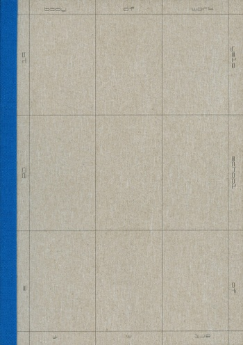
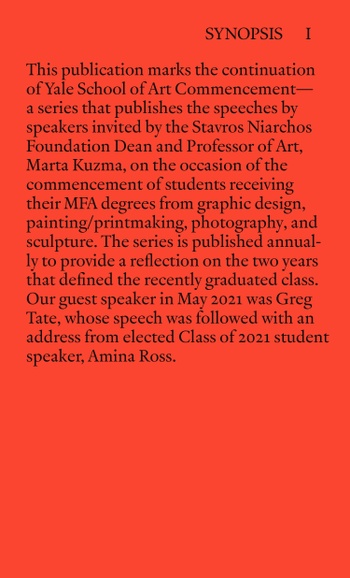
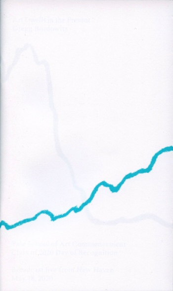

PUBLICATIONS
PRINT PUBLICATIONS
ALL-SCHOOL MFA BOOK SERIES (2017-PRESENT)
This series of printed publications was initiated in 2017 and features the work of each recently graduated MFA class.
Often distributed for free at public School of Art events, these publications are also made available through the Yale University Library System
Editor detailsFeaturing the work of the 2020 MFA graduates
Body of Work: Yale School of Art MFA 2020
Published 2021
Body of Work showcases the collected work of the graduating MFA class of 2020, and marks the fourth installment of Yale School of Art's all-school MFA book series. Featuring an afterword by Stavros Niarchos Foundation Dean and Professor of Art Marta Kuzma, and written contributions from Steven Rodriguez and Nicholas Weltyk, both Graphic Design ‘20; Carly Sheehan, Painting/Printmaking '20; Angela Chen, Photography '20; and David Roy, Sculpture'20.
Edited by:Willis Kingery,Graphic Design '19; Designed by Bryant Wells, Graphic Design '20; cover illustrations by Timothy Brawner, Painting/Printmaking '20
304 pages, ISBN: 978-1-948891-07-3
Editor details
Featuring the work of the 2019 MFA graduates
Body of Work: Yale School of Art MFA 2019
Published 2020
Featuring a foreword by Stavros Niarchos Foundation Dean and Professor of Art Marta Kuzma, and written contributions from Emma Gregoline, Graphic Design ‘19; Emile Mausner, Painting/Printmaking '19; Genesis Báez, Photography '19; and Alfredo Diaz, Sculpture '19; Body of Work showcases the collected work of the graduating MFA class of 2019, and marks the third installment of Yale School of Art’s all-school MFA book series.
Edited by Willis Kingery, Graphic Design '19; Edi Dai, Painting/Printmaking '19; and David Knowles, Graphic Design '19.
Designed by David Knowles, Graphic Design '19; and Willis Kingery, Graphic Design '19.
256 pages, ISBN: 978-1-948891-02-8
Editor details
Featuring the work of the 2018 MFA graduates
Yale School of Art MFA 2018
Published 2019
Featuring a foreword by Stavros Niarchos Foundation Dean and Professor of Art Marta Kuzma, and written contributions from Bryce Wilner, Graphic Design ‘18; Ernest A. Bryant III, Painting/Printmaking '18; and Ian Page Sculpture '18; this publication showcases the collected work of the graduating MFA class of 2018, and marks the second installment of Yale School of Art’s all-school MFA book series.
Edited by Ayham Ghraowi, Graphic Design '17; Designed by Hrefna Sigurðardóttir, Graphic Design'18; Cover image: Dan Swindel, Photography '18, Untitled (2019).
256 pages, ISBN: 978-1-948891-00-4
Editor detailsFeaturing the work of the 2017 MFA graduates
Yale School of Art MFA 2017
Published 2018
Featuring opening remarks by Stavros Niarchos Foundation Dean and Professor of Art Marta Kuzma, and written contributions from Gerald Sheffield, Painting/ Printmaking ‘17, Lucy Lindsey,Sculpture '17,Chase Booker, Graphic Design '17; this publication showcases the collected work of the graduating MFA class of 2017 and initiated the annual publishing program in the first year of Marta Kuzma’s appointment as Dean.
Design and editing by Ben Ganz and Ayham Ghraowi, both Graphic Design '17. Publication wrapper by Wes Larios, Painting/Printmaking '17.
248 pages
Editor detailsYALE SCHOOL OF ART COMMENCEMENT
This booklet series publishes the speeches by speakers invited by the Dean on the occasion of the commencement of students receiving their MFA degrees from graphic design, painting/printmaking, photography, and sculpture.
Published bi-annually and launched with Fred Moten’s 2018 commencement address, the series is intended to provide a reflection on the two years that defined the recently graduated class.
Efforts are currently being undertaken to make these publications publicly accessible.
Editor details
Now Dig This by Greg Tate
Published 2021
Now Dig This marks the continuation of Yale School of Art Commencement—a series that publishes the speeches by speakers invited by the Dean on the occasion of the commencement of students receiving their MFA degrees from graphic design, painting/printmaking, photography, and sculpture.
Our guest speaker in May 2021 was Greg Tate.
The class of 2021 representative student speaker was Amina Ross, Sculpture ‘21, featuring a preamble by Stavros Niarchos Foundation Dean and Professor of Art Marta Kuzma.
Edited by Willis Kingery, Graphic Design '19. Designed by Bianca Ibarlucea, Graphic Design '21.
74 pages, ISBN: 978-1-948891-09-7
Editor details
Art Dwells in the Present by Gregg Bordowitz
Published 2020
Featuring a preamble by Stavros Niarchos Foundation Dean and Professor of Art Marta Kuzma, Art Dwells in The Present marks the continuation of Yale School of Art Commencement—a series that publishes the speeches by speakers invited by the Dean on the occasion of the commencement of students receiving their MFA degrees from graphic design, painting/printmaking, photography, and sculpture.
Our guest speaker in May 2020 was Gregg Bordowitz.
Fragmental editing by Angie Keefer, BA ‘99 and Willis Kingery, Graphic Design '19. Designed by Jinu Hong, Graphic Design '20, and Tuan Quoc Pham, Graphic Design '20.
30 pages, ISBN: 978-1-948891-06-6
Editor detailsSermon of the Nonresponse by Fred Moten
Published 2018
Featuring a preamble by Stavros Niarchos Foundation Dean and Professor of Art Marta Kuzma, Sermon of the Nonresponse marked the inauguration of Yale School of Art Commencement—a series that publishes the speeches by speakers invited by the Dean on the occasion of the commencement of students receiving their MFA degrees from graphic design, painting/printmaking, photography, and sculpture.
Our guest speaker in May 2018 was Fred Moten.
Edited by Ayham Ghraowi, Graphic Design ‘17. Designed by Bryce Wilner, Graphic Design '18.
30 pages, ISBN: 978-1-948891-04-2
Editor detailsEMAIL PUBLICATIONS
NEWS FROM NEW HAVEN
"News from New Haven" is a monthly public newsletter about news and events happening at the Yale School of Art.
Editor details"NEWS FROM NEW HAVEN" ARCHIVE
- June 25, 2020
- May 22, 2020
- Feb 26, 2020
- Jan 21, 2020
- Nov 13, 2019
- Oct 15, 2019
- Sept 12, 2019
- Jul 31, 2019
- May 15, 2019
- Apr 17, 2019
- Mar 27, 2019
- Feb 20, 2019
- Jan 22, 2019
- Dec 20, 2018
- Aug 29, 2018
- Jun 20, 2018
- Apr 14, 2018
- Feb 3, 2018
- Dec 23, 2017
- Dec 1, 2017
- Oct 12, 2017
- Sept 12, 2017